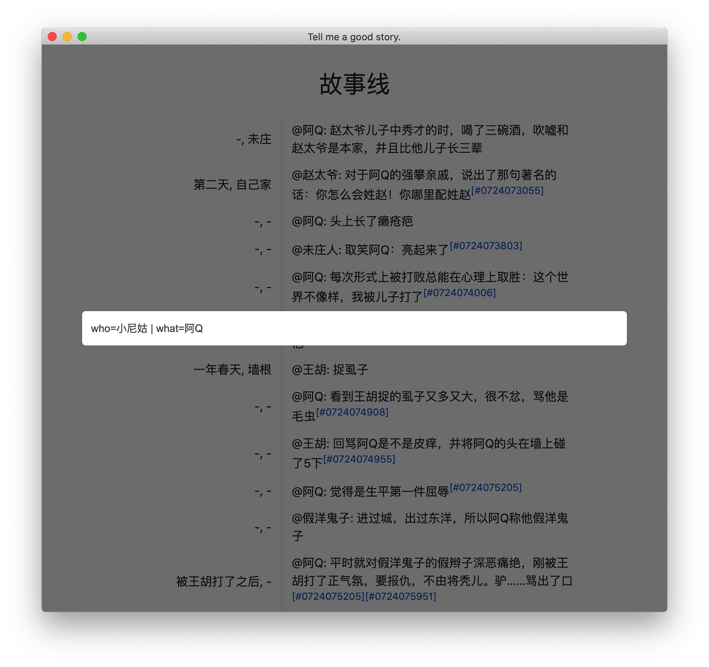
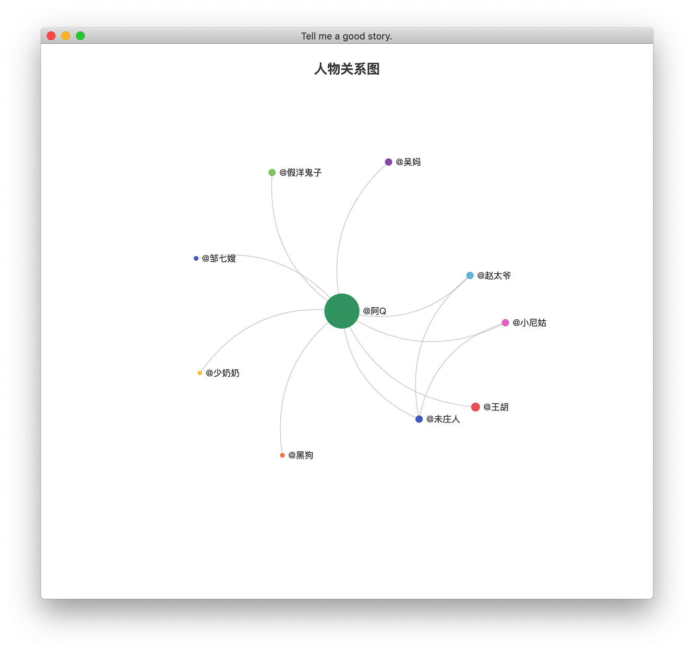
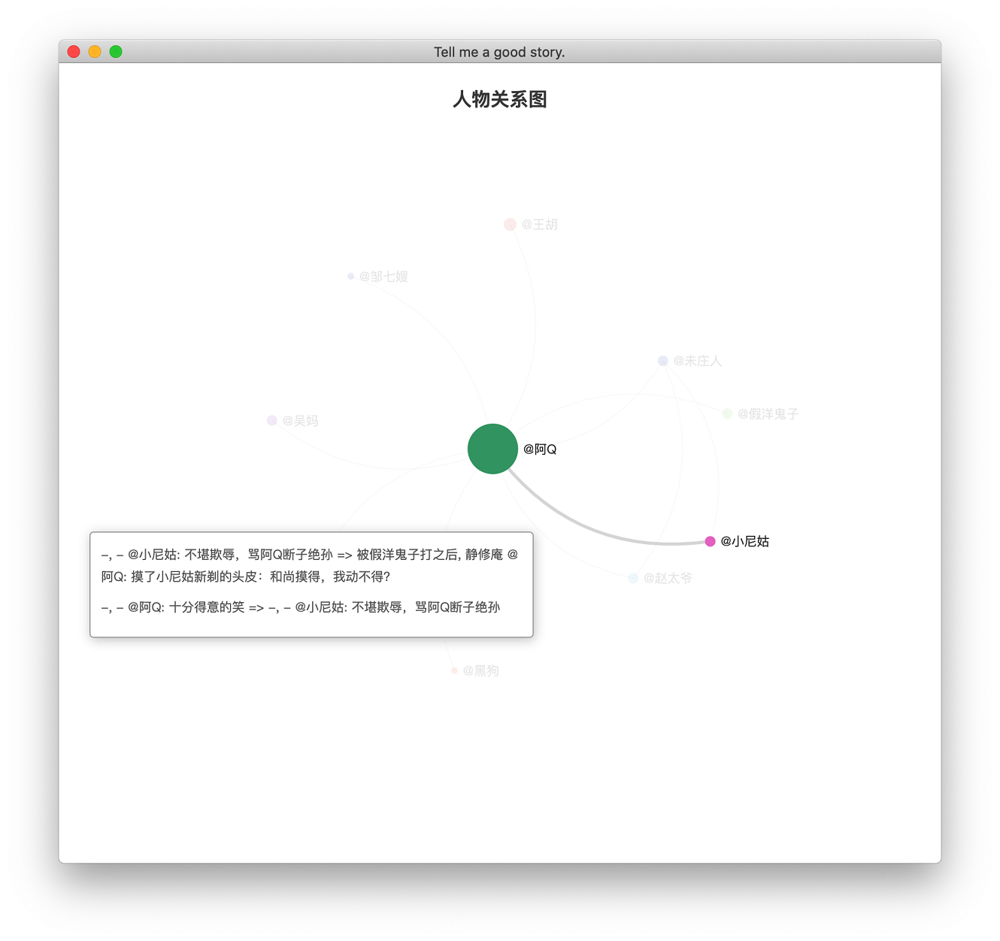

小说时间线整理工具w4

本人是一名小说爱好者，看多了，有时候免不了要理一下时间线，更好的理解故事梗概。之前用过思维导图整理，但是总觉得思维导图“有点重”，在作图的过程中，会陷入“到底是选择方框还是圆框”、“到底是虚线还是实线”这样的纠结中，导致最后做出来的图形式大于内容，搞得自己是精疲力尽。也曾在本子上整理，但是不便于检索和保存。其实想要的很简单：可以大致下查看事件发生的先后顺序和联系，具有一定的筛查功能就够了。
在这样的背景下，有了这款vim插件，之所以选择vim是因为自己平常用的较多，写博客、纯文本编辑一般都用它。插件名字w4，灵感来源小说三要素：地点、人物、事件，翻译成英文就是where、who、what，再加一个时间when。
大概支持以下功能：
- 纯文本
- 自动补全
- 设置关联
- 类SQL筛查
- 人物关系图
使用方式
安装完成后，在vim输入:W4Go命令打开浏览窗口，按enter打开输入窗口。
文本样式
文本以%% who what when where开头，如下所示：
%% who what when where
#0724073055 @阿Q 赵太爷儿子中秀才的时，喝了三碗酒，吹嘘和赵太爷是本家，并且比他儿子长三辈 - 未庄
#0724073430 @赵太爷 对于阿Q的强攀亲戚，说出了那句著名的话：你怎么会姓赵！你哪里配姓赵 第二天 自己家 #0724073055
#0724073803 @阿Q 头上长了癞疮疤 - -
#0724074006 @未庄人 取笑阿Q：亮起来了 - - #0724073803
#0724074205 @阿Q 每次形式上被打败总能在心理上取胜：这个世界不像样，我被儿子打了 - - #0724074006
分别代表人物、事件、时间、地点，人名以@开头。可以看成一个4列的数据库表，列的顺序可以调整，如果当前列为空用-代替。列以空格分割，如果不愿意用空格也可以在文件头自己指定。例如可以在文件头加上下面的指令指定以斜杠（/）为分隔符。
%% col_split_char=/
可以看到，示例文本是多于四列的，因为第一列相当于id，唯一标识一行，最后一列是关联列，用于建立各行之间的联系。
自动补全
输入@符号自动提示所有的人名
输入#提示之前的条目，在输入过程中可以使用Tab触发补全，可以只输入少量字符按Tab自动补全，比如示例文本最后一行可以输入#006就会自动提示。
类SQL筛查
支持：
- 特殊命令：以
/开头，目前只有两个，/all显示所有的条目，/who显示人物关系图 - 逻辑表达式：与（&）、或（|）、非（!）、等于（=，模糊匹配）、不等于（!=）
比如和阿Q相关的事：
who=阿Q
人物或事件包含小尼姑：
who=小尼姑 | what=小尼姑
未庄发生的事：
where=未庄
春天发生的事：
when=春天
人物关系图
输入/who命令

